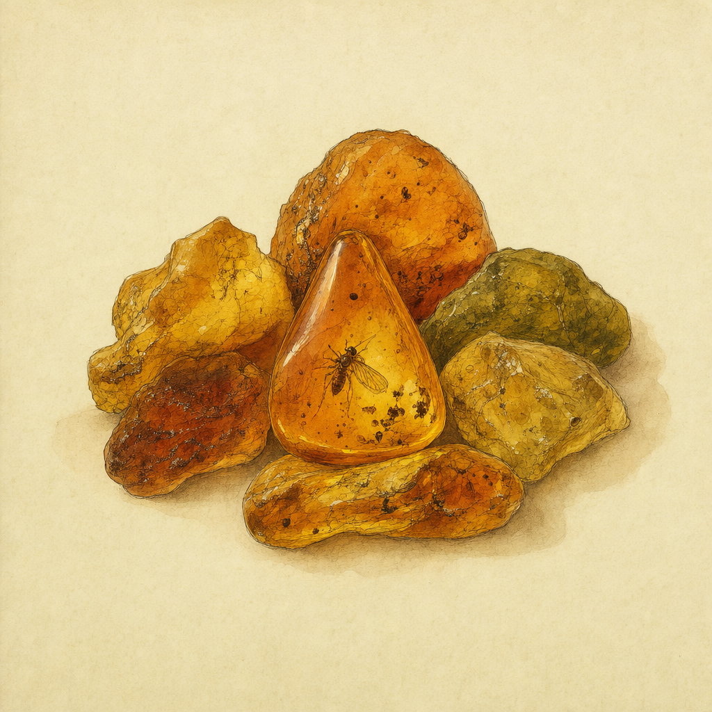

Meripihka ei ole kivi vaan havupuiden pihkaa, joka kovettui noin 40 miljoonaa vuotta sitten. Myrsky heittää kokkareita yhä Itämeren rantahiekkaan, ja etelään sitä kuljetettiin meripihkatietä pitkin Adrianmerelle asti. Kirkkaimpiin paloihin on jäänyt hyönteisiä kiinni.